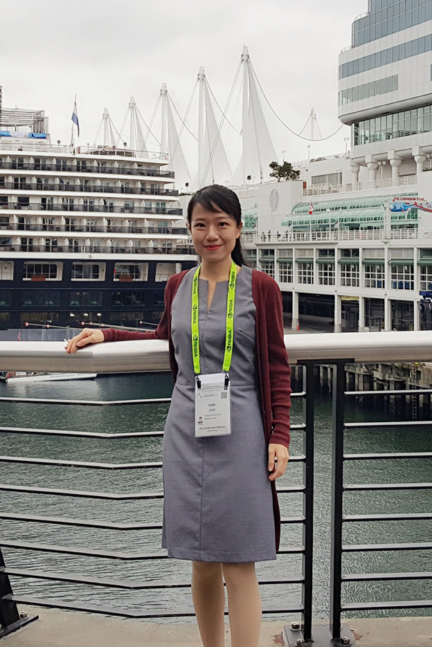

Nan Xiao, Zhe Zhu, Ralph Martin, Kun Xu, Jia-Ming Lu and Shi-Min Hu
We present the first computational tool to help ordinary users create transforming pop-up books. In each transforming pop-up, when the user pulls a tab, an initial flat 2D pattern, i.e. a 2D shape with a superimposed picture, such as an airplane, turns into a new 2D pattern, such as a robot, standing up from the page. Given the two 2D patterns, our approach automatically computes a 3D pop-up mechanism that transforms one pattern into the other; it also outputs a design blueprint, allowing the user to easily make the final model. We also present a theoretical analysis of basic transformation mechanisms; combining these basic mechanisms allows more flexibility of final designs. Using our approach, inexperienced users can create models in a short time; previously, even experienced artists often took weeks to manually create them. We demonstrate our method on a variety of real world examples.Litian Xiao, Nan Xiao, Mengyuan Li, Zhanqing Liu, Fei Wang, Yuliang Li and Kewen Hou
China Aerospace Science and Technology Corporation
Advanced Technology Engineer
2013.9 - 2016.7
Tsinghua University
Research Assistant
2011.4 - 2013.6
North China Institute of Computing Technology
Front-end Developer
2015.4 - 2016.3
Hulu Beijing
UX Designer Intern
Major Research Interests: Computer Graphics, Computational Design, HCI, Art & Design, Computer Vision
Python, C++, JAVA, JavaScript, Html5+CSS
OpenGL, OpenCV, D3.js, Qt, PyTorch
Photoshop, Premiere, After Effects, 3dsMax, Maya, MotionBuilder, ZBrush
CG Painting, UX Design, 2D/3D Animation
